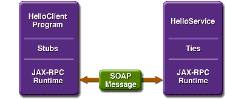

Creating a Simple Web Service and Client with JAX-RPC
This section shows how to build and deploy a simple web service and client. A later section, Web Service Clients, provides examples of additional JAX-RPC clients that access the service. The source code for the service is in
<INSTALL>/j2eetutorial14/examples/jaxrpc/helloservice/and the client is in<INSTALL>/j2eetutorial14/examples/jaxrpc/staticstub/.Figure 8-1 illustrates how JAX-RPC technology manages communication between a web service and client.

Figure 8-1 Communication Between a JAX-RPC Web Service and a Client
The starting point for developing a JAX-RPC web service is the service endpoint interface. A service endpoint interface (SEI) is a Java interface that declares the methods that a client can invoke on the service.
You use the SEI, the
wscompiletool, and two configuration files to generate the WSDL specification of the web service and the stubs that connect a web service client to the JAX-RPC runtime. For reference documentation onwscompile, see the Application Server man pages athttp://docs.sun.com/db/doc/817-6092.Together, the
wscompiletool, thedeploytoolutility, and the Application Server provide the Application Server's implementation of JAX-RPC.These are the basic steps for creating the web service and client:
- Code the SEI and implementation class and interface configuration file.
- Compile the SEI and implementation class.
- Use
wscompileto generate the files required to deploy the service.- Use
deploytoolto package the files into a WAR file.- Deploy the WAR file. The tie classes (which are used to communicate with clients) are generated by the Application Server during deployment.
- Code the client class and WSDL configuration file.
- Use
wscompileto generate and compile the stub files.- Compile the client class.
- Run the client.
The sections that follow cover these steps in greater detail.
Coding the Service Endpoint Interface and Implementation Class
In this example, the service endpoint interface declares a single method named
sayHello. This method returns a string that is the concatenation of the stringHellowith the method parameter.A service endpoint interface must conform to a few rules:
- It extends the
java.rmi.Remoteinterface.- It must not have constant declarations, such as
public final static.- The methods must throw the
java.rmi.RemoteExceptionor one of its subclasses. (The methods may also throw service-specific exceptions.)- Method parameters and return types must be supported JAX-RPC types (see Types Supported by JAX-RPC).
In this example, the service endpoint interface is named
HelloIF:package helloservice; import java.rmi.Remote; import java.rmi.RemoteException; public interface HelloIF extends Remote { public String sayHello(String s) throws RemoteException; }In addition to the interface, you'll need the class that implements the interface. In this example, the implementation class is called
HelloImpl:package helloservice; public class HelloImpl implements HelloIF { public String message ="Hello"; public String sayHello(String s) { return message + s; } }Building the Service
To build
MyHelloService, in a terminal window go to the<INSTALL>/j2eetutorial14/examples/jaxrpc/helloservice/directory and type the following:The
buildtask command executes theseasantsubtasks:The compile-service Task
This
asanttask compilesHelloIF.javaandHelloImpl.java, writing the class files to thebuildsubdirectory.The generate-wsdl Task
The
generate-wsdltask runswscompile, which creates the WSDL and mapping files. The WSDL file describes the web service and is used to generate the client stubs in Static Stub Client. The mapping file contains information that correlates the mapping between the Java interfaces and the WSDL definition. It is meant to be portable so that any J2EE-compliant deployment tool can use this information, along with the WSDL file and the Java interfaces, to generate stubs and ties for the deployed web services.The files created in this example are
MyHelloService.wsdlandmapping.xml. Thegenerate-wsdltask runswscompilewith the following arguments:wscompile -define -mapping build/mapping.xml -d build -nd build -classpath build config-interface.xmlThe
-classpathflag instructswscompileto read the SEI in thebuilddirectory, and the-defineflag instructswscompileto create WSDL and mapping files. The-mappingflag specifies the mapping file name. The-dand-ndflags tell the tool to write class and WSDL files to thebuildsubdirectory.The
wscompiletool reads an interface configuration file that specifies information about the SEI. In this example, the configuration file is namedconfig-interface.xmland contains the following:<?xml version="1.0" encoding="UTF-8"?> <configuration xmlns="http://java.sun.com/xml/ns/jax-rpc/ri/config"> <service name="MyHelloService" targetNamespace="urn:Foo" typeNamespace="urn:Foo" packageName="helloservice"> <interface name="helloservice.HelloIF"/> </service> </configuration>This configuration file tells
wscompileto create a WSDL file namedMyHellowith the following information:
Service.wsdl
- The service name is
MyHelloService.- The WSDL target and type namespace is
urn:Foo. The choice for what to use for the namespaces is up to you. The role of the namespaces is similar to the use of Java package names--to distinguish names that might otherwise conflict. For example, a company can decide that all its Java code should be in the packagecom.wombat.*. Similarly, it can also decide to use the namespacehttp://wombat.com.- The SEI is
helloservice.HelloIF.The
packageNameattribute instructswscompileto put the service classes into thehelloservicepackage.Packaging and Deploying the Service
You can package and deploy the service using either
deploytoolorasant.Packaging and Deploying the Service with deploytool
Behind the scenes, a JAX-RPC web service is implemented as a servlet. Because a servlet is a web component, you run the New Web Component wizard of the
deploytoolutility to package the service. During this process the wizard performs the following tasks:To start the New Web Component wizard, select File
New
- Introduction dialog box
- WAR File dialog box
- Select the button labeled Create New Stand-Alone WAR Module.
- In the WAR File field, click Browse and navigate to
<INSTALL>/j2eetutorial14/examples/jaxrpc/helloservice/.- In the File Name field, enter
MyHelloService.- Click Create Module File.
- Click Edit Contents.
- In the tree under Available Files, locate the
<INSTALL>/j2eetutorial14/examples/jaxrpc/helloservice/directory.- Select the
buildsubdirectory.- Click Add.
- Click OK.
- In the Context Root field, enter
/hello-jaxrpc.- Click Next.
- Choose Component Type dialog box
- Choose Service dialog box
- Component General Properties dialog box
- Web Service Endpoint dialog box
- In the Service Endpoint Interface combo box, select
helloservice.HelloIF.- In the Namespace combo box, select
urn:Foo.- In the Local Part combo box, select
HelloIFPort.- The
deploytoolutility will enter a default Endpoint Address URIHelloImplin this dialog. This endpoint address must be updated in the next section.- Click Next.
- Click Finish.
Specifying the Endpoint Address
To access
MyHelloService, the tutorial clients will specify this service endpoint address URI:The
/hello-jaxrpcstring is the context root of the servlet that implementsMyHelloService. The/hellostring is the servlet alias. You already set the context root in Packaging and Deploying the Service with deploytool above. To specify the endpoint address, set the alias as follows:Deploying the Service
In
deploytool, perform these steps:You can view the WSDL file of the deployed service by requesting the URL
http://localhost:8080/hello-jaxrpc/hello?WSDLin a web browser. Now you are ready to create a client that accesses this service.Packaging and Deploying the Service with asant
To package and deploy the helloservice example, follow these steps:
You can view the WSDL file of the deployed service by requesting the URL
http://localhost:8080/hello-jaxrpc/hello?WSDLin a web browser. Now you are ready to create a client that accesses this service.Undeploying the Service
At this point in the tutorial, do not undeploy the service. When you are finished with this example, you can undeploy the service by typing this command:
Static Stub Client
HelloClientis a stand-alone program that calls thesayHellomethod of theMyHelloService. It makes this call through a stub, a local object that acts as a proxy for the remote service. Because the stub is created bywscompileat development time (as opposed to runtime), it is usually called a static stub.Coding the Static Stub Client
Before it can invoke the remote methods on the stub, the client performs these steps:
- Creates a
Stubobject:
(Stub)(new MyHelloService_Impl().getHelloIFPort())The code in this method is implementation-specific because it relies on a
MyHelloService_Implobject, which is not defined in the specifications. TheMyHelloService_Implclass will be generated bywscompilein the following section.- Sets the endpoint address that the stub uses to access the service:
stub._setProperty
(javax.xml.rpc.Stub.ENDPOINT_ADDRESS_PROPERTY, args[0]);At runtime, the endpoint address is passed to
HelloClientinargs[0]as a command-line parameter, whichasantgets from theendpoint.addressproperty in thebuild.propertiesfile. This address must match the one you set for the service in Specifying the Endpoint Address.- Casts
stubto the service endpoint interface,HelloIF:
HelloIF hello = (HelloIF)stub;Here is the full source code listing for the
HelloClient.javafile, which is located in the directory<INSTALL>/j2eetutorial14/examples/jaxrpc/staticstub/src/:package staticstub; import javax.xml.rpc.Stub; public class HelloClient { private String endpointAddress; public static void main(String[] args) { System.out.println("Endpoint address = " + args[0]); try { Stub stub = createProxy(); stub._setProperty (javax.xml.rpc.Stub.ENDPOINT_ADDRESS_PROPERTY, args[0]); HelloIF hello = (HelloIF)stub; System.out.println(hello.sayHello("Duke!")); } catch (Exception ex) { ex.printStackTrace(); } } private static Stub createProxy() { // Note: MyHelloService_Impl is implementation-specific. return (Stub) (new MyHelloService_Impl().getHelloIFPort()); } }Building and Running the Static Stub Client
To build and package the client, go to the
<INSTALL>/j2eetutorial14/examples/jaxrpc/staticstub/directory and type the following:The
buildtask invokes threeasantsubtasks:The
generate-stubstask runs thewscompiletool with the following arguments:This
wscompilecommand reads theMyHelloService.wsdlfile that was generated in Building the Service. The command generates files based on the information in the WSDL file and the command-line flags.The
-gen:clientflag instructswscompileto generate the stubs, other runtime files such as serializers, and value types. The-dflag tells the tool to write the generated output to thebuild/staticstubsubdirectory.The
wscompiletool reads a WSDL configuration file that specifies the location of the WSDL file. In this example, the configuration file is namedconfig-wsdl.xml, and it contains the following:<configuration xmlns="http://java.sun.com/xml/ns/jax-rpc/ri/config"> <wsdl location="http://localhost:8080/hello- jaxrpc/hello?WSDL" packageName="staticstub"/> </configuration>The
packageNameattribute specifies the Java package for the generated stubs. Notice that the location of the WSDL file is specified as a URL. This causes thewscompilecommand to request the WSDL file from the web service, and this means that the web service must be correctly deployed and running in order for the command to succeed. If the web service is not running or if the port at which the service is deployed is different from the port in the configuration file, the command will fail.The c
ompile-clienttask compilessrc/HelloClient.javaand writes the class file to thebuildsubdirectory.The
package-clienttask packages the files created by the generate-stubsandcompile-clienttasks into thedist/client.jarfile. Except for theHelloClient.class, all the files inclient.jarwere created bywscompile. Note thatwscompilegenerated theHelloIF.classbased on the information it read from theMyHelloService.wsdlfile.To run the client, type the following:
This task invokes the web service client, passing the string
Dukefor the web service method parameter. When you run this task, you should get the following output:
All of the material in The J2EE(TM) 1.4 Tutorial is copyright-protected and may not be published in other works without express written permission from Sun Microsystems.